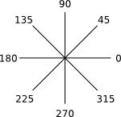
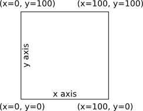

The compass is oriented so that due east (right) is 0 degrees, 90 is north, 180 is west, 270 is south. Angles wrap as expected: -90 is south, 450 is north.

cannon(angle, range)
The cannon() function fires a cannonball towards the specified
angle and range. The angle is independent of the direction of the duck.
The range can be 0-70 metres, with greater ranges truncated to 70.
The cannon takes about one second to reload after firing.
If cannon() is called during this time, nothing happens.
cannon() returns true if a cannonball was fired,
or false if the cannon is reloading.
scan(angle) scan(angle, width)
The scan() function activates the duck's radar. This function
returns the range to the nearest opponent in the specified direction.
The angle is independent of the direction of the duck. Sunk opponents are
not detected. If there is no opponent in that direction,
then Infinity is returned.
The second (optional) parameter of scan() specifies the width
of the scanning beam. This can be from 1 degree to 20 degrees. Advanced
players may wish to start scanning with a width of 20 for a fast scan, then
progressively decrease the width to get more accuracy. If not specified,
the width is 5.
This parameter is only available with JavaScript, not with blocks.
swim(angle) swim(angle, speed)
The swim() function starts the duck moving. The duck will
continue moving in the specified direction indefinitely.
The second (optional) parameter of swim() specifies the speed.
This can be from 0 (stopped) to 100 (fast). Direction of movement may only
be changed if the speed is 50 or less. If not specified, the speed is 50.
This parameter is only available with JavaScript, not with blocks.
Crashing into the edges of the pond will damage your duck. Crashing into other ducks will damage both ducks. The amount of damage is proportional to your speed.
stop()
The stop() function stops the duck from moving. The duck will
take a moment to slow down before stopping completely. This
is the same as calling swim() with a speed of zero.
getX() getY()
The getX() and getY() functions return the
duck's horizontal and vertical positions. Values are between 0 and 100,
starting from the lower-left corner.

speed()
The speed() function returns the duck's current speed.
Values are between 0 (stopped) and 100 (fast). This function may be used to
detect collisions (which instantly stop the duck).
health()
The health() function returns the duck's current health level.
Values are between 0 (sunk) and 100 (perfect). Advanced players may wish to
store the health in a variable, then periodically check to see if the
health has decreased, thus indicating that the duck is under attack.
There is no way to repair health.
log()
The log() function prints the specified number to your
browser's console. This is terribly useful when debugging your code.
if (condition) {
statements
}
if (condition) {
statements
} else if (condition) {
statements
}
if (condition) {
statements
} else {
statements
}
If the condition is true, then execute the contained statements.
The if may be followed by any number of
other else if conditions, and at the end by
an optional else condition that executes if none of the previous
conditions were true.
== != < <= > >=
These expressions compare two numbers and return true or
false. The six available equality operators are:
| Operator | Example | Returns |
|---|---|---|
| Equals | 5 == 10 |
false |
| Not equals | 5 != 10 |
true |
| Less than | 5 < 10 |
true |
| Less than or equal | 5 <= 10 |
true |
| Greater than | 5 > 10 |
false |
| Greater than or equal | 5 >= 10 |
false |
Use of != may be dangerous if the numbers being compared are
fractions. Consider this code that is designed to swim to 50 then stop:
while (getY() != 50) {
swim(90, 50);
}
stop();
The above code will probably fail because getY() may be 49.4
on one execution, then 50.6 on the next execution. Since the value was not
seen at exactly 50, the loop continues forever. Below is better code:
while (getY() < 50) {
swim(90, 50);
}
stop();
&& ||
'And' is represented by the && operator.
It returns true only if both inputs are true.
For example this code will only fire the cannon if the range is both greater
than 5 and less than 70:
if (range > 5 && range < 70) {
cannon(angle, range);
}
'Or' is represented by the || operator.
It returns true if either input is true.
For example this code will stop if the duck is close to any wall:
if (getX() < 10 || getX() > 90 ||
getY() < 10 || getY() > 90) {
stop();
}
true false
The value true is mainly used by the while loop to make a loop
that executes forever. The value false is also available.
while (condition) {
statements
}
Loops will repeat executing the enclosed statements as long as the condition is true. Thus, the following will fire the cannon west forever:
while (true) {
cannon(180, 50);
}
Whereas the following will fire the canon west as long as an opponent is in range:
while (scan(180, 5) <= 70) { cannon(180, scan(180, 5)); }
123
Numbers are used for many things, including ranges, angles, and counters.
Numbers may be negative (e.g. -360), or fractional (e.g. 3.14159),
or very large (e.g. 9007199254740992).
There is even a special number called Infinity.
Do not use thousands separators (e.g. 9,000).
+ - * /
These operators take two numbers and return a single number. The four available arithmetic operators are:
| Operator | Example | Returns |
|---|---|---|
| Plus | 3 + 4 |
7 |
| Minus | 3 - 4 |
-1 |
| Multiply | 3 * 4 |
12 |
| Divide | 3 / 4 |
0.75 |
Math.operation(number)
These functions take a number and return a number. The eight available functions are:
| Function | Example | Returns |
|---|---|---|
| Square root | Math.sqrt(25) |
5 |
| Absolute | Math.abs(-25) |
25 |
| Sine | Math.sin_deg(30) |
0.5 |
| Cosine | Math.cos_deg(30) |
0.86 |
| Tangent | Math.tan_deg(30) |
0.577 |
| Arcsine | Math.asin_deg(0.5) |
30 |
| Arccosine | Math.acos_deg(0.866) |
30.003 |
| Arctangent | Math.atan_deg(0.577) |
29.985 |
Note that these trigonmetric functions are custom to the Pond game and all use degrees. The standard JavaScript functions use radians.
Math.random()
This function returns a random fraction from 0.0 to 1.0. To get a random number in a larger range, just multiply it by the maximum value. Here's an example of getting a random angle:
var angle = Math.random() * 360;
var name = value;
Assigns a value (usually a number) to the named variable.
The name of the variable should be something that makes sense,
such as range or angle.
Note that variable names are case-sensitive,
thus angle and Angle are two completely different
variables. Variable names must only use the English letters a-z, and numbers.
Variable names may not start with a number.
The var keyword may be omitted on all but the
first assignment, but there is no harm in using it.
name += number;
This is a shortcut for adding a number to an existing variable. There is no difference between the following two lines:
angle += 10; var angle = angle + 10;
Do not use += on a variable that has not already been defined.
If in doubt, assign the variable to 0 at the beginning of the program.
name
Retrieves the value (usually a number) that had previously been assigned to the named variable.
TODO